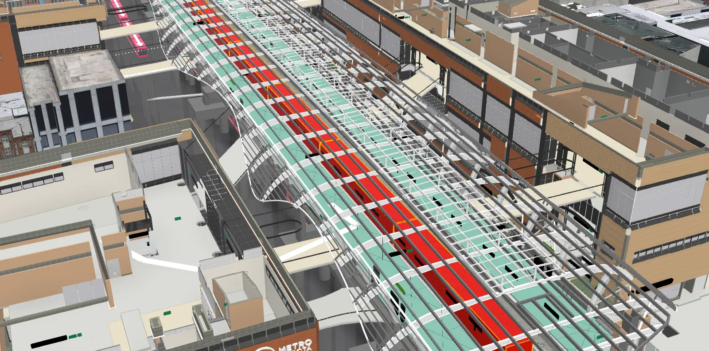

Bogotá Metro · Calle 63 and Calle 72 stations
From BIM models to a station you can navigate
Revit · ArcGIS Indoors · Network Analyst · Velocity · Python
Part of my current role in GIS solutions engineering · Nov 2026- Challenge
- Two stations existed only as architecture and structure models. Nobody could ask how to go from the entrance to the platform, or how to do it in a wheelchair.
- My part
- Three specific pieces: the walking network with two modes (walking, and wheelchair with no stairs), the 3D scene with terrain fitted to real heights, and the live bus layer from the city open feed.
- Result
- 2D/3D viewer, dashboards and a mobile map with routing between stations: about 12 minutes entrance to entrance on foot and 14 in a wheelchair, with 178 rooms reachable in the model.
- Limit
- Ramps and stair lifts missing from the BIM are marked as proposals. Times come from the model, not from site measurements.



Public apps: digital twin hub ↗ · dashboards: accessibility ↗ · inventory ↗ · maintenance ↗ · passenger flow ↗